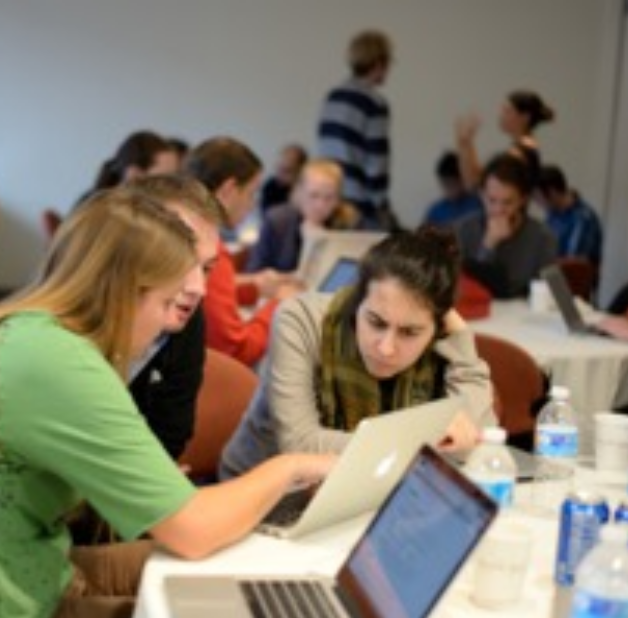

Stanford International Policy Studies Alumni Association


Career Development
Connect with alumni to explore new career opportunities
Members

Anthony Suen ('11)
Berkeley Institute for Data Science, UC Berkeley

Joanna Wilson Green ('09)
PwC

Charles Nicas ('10)
Hoover Institution, Stanford

Aneta Siemiginowska
Astrophysicist, Smithsonian Astrophysical Observatory

Daniel Foreman-Mackey
Sagan Postdoctoral Fellow, University of Washington

Lucas Beard ('15)
Hass Business School

Emma Kelsey ('16)
LendUp
Sponsors
Stanford International Policy Studies Alumni AssociationMoore-Sloan Data Science Environments